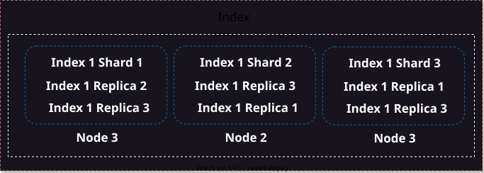
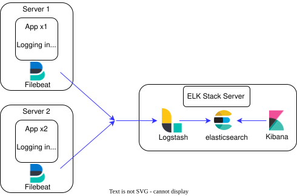
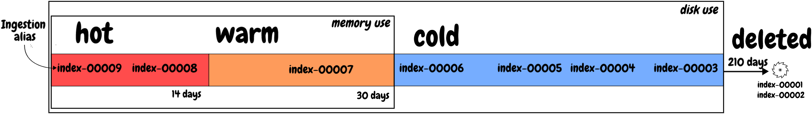

ELK Stack
Elasticsearch
is search and analytics engine that is widely used for full-text search, log and event data analysis
-
storage
-
analytics
-
search
Shard - shard is a basic unit of storage and search
Indexer - logical space for storing shards

Logstach
Kibana
Download and install the Debian package manually
wget https://artifacts.elastic.co/downloads/elasticsearch/elasticsearch-8.11.1-amd64.deb
wget https://artifacts.elastic.co/downloads/elasticsearch/elasticsearch-8.11.1-amd64.deb.sha512
shasum -a 512 -c elasticsearch-8.11.1-amd64.deb.sha512
sudo dpkg -i elasticsearch-8.11.1-amd64.deb
after install take password from cli
sudo systemctl daemon-reload
systemctl start elasticsearch.service
systemctl status elasticsearch.service
GUI work only on protocol https https://127.0.0.1:9200
Add Node to Elastic
sudo /etc/elasticsearch/elasticsearch.yml
cluster.name: elasticsearch
node.name: node-1
filebeat
harvester proccess read specific file
1 harvester = 1 proccess
Input harvester tracking mechanism
have many
stdin, syslog, tcp, udp, aws
curl -L -O https://artifacts.elastic.co/downloads/beats/filebeat/filebeat-8.11.1-amd64.deb
sudo dpkg -i filebeat-8.11.1-amd64.deb
sudo nano /etc/filebeat/filebeat.yml
edit file
enabled: true
output.elasticsearch:
hosts: [https://127.0.0.1:9200]
username: "elastic"
password: "8-UIKFdgtdgDdgsHfsd"
restart daemons
systemctl daemons-reload
and check status
systemctl status filebeat.service
add certs from elastic to filebeat
sudo ls /etc/elastic/search/certs
edit file
sudo nano /etc/filebeat/filebeat.yml
enabled: true
output.elasticsearch:
hosts: [https://127.0.0.1:9200]
ssl.certificate_authorities:
- /etc/elasticsearch/certs/http_ca.crt
username: "elastic"
password: "8-UIKFdgtdgDdgsHfsd"
restart daemons
systemctl daemons-reload
and check status
systemctl status filebeat.service
filebeat.yml vs logstash.yml
in loglash have filters addon
in Filebeat reads line by line, Logstash generates a document using a filter
What, Where, When…

Logstash
As mentioned earlier, Logstash is the data processing component. It collects and processes logs and other event data from various sources, then transforms and sends it to Elasticsearch or other destinations. Filters, transforms and enriches data according to your requirements. For example, you can extract fields from text logs, convert date formats and time stamps, and perform other manipulations with data.
install logstash from binary
curl -L -O https://artifacts.elastic.co/downloads/logstash/logstash-8.11.4-linux-x86_64.tar.gz
sudo dpkg -i logstash-8.1.1-amd64.deb
sudo nano example.conf
```json
input {
file {
path => "/var/log/*.log"
}
}
# filter {}
output {
file { path => "/etc/logstash/result.log" }
}
copy file to directory logstash
sudo cp example.conf /etc/logstash/conf.d/main.conf
run and reload config after any edit
sudo /usr/share/logstash/bin/logstash -f /etc/logstash/conf.d/main.conf --config.reload.automatic
Kibana
wget https://artifacts.elastic.co/downloads/kibana/kibana-8.11.1-amd64.deb
hasum -a 512 kibana-8.11.1-amd64.deb
sudo dpkg -i kinana-8.1.1-amd64.deb
Run Kibana with systemd
sudo /bin/systemctl daemon-reload
sudo /bin/systemctl enable kibana.service
Kibana can be started and stopped as follows:
sudo systemctl start kibana.service
sudo systemctl stop kibana.service
kibana default port 5601 for kibana for normal work need 6 ram or 8 ram
127.0.0.1:5601
Start Elasticsearch and generate an enrollment token for Kibana
When you start Elasticsearch for the first time, the following security configuration occurs automatically:
-
Authentication and authorization are enabled, and a password is generated for the elastic built-in superuser.
-
Certificates and keys for TLS are generated for the transport and HTTP layer, and TLS is enabled and configured with these keys and certificates.
The password and certificate and keys are output to your terminal.
ou can then generate an enrollment token for Kibana with the elasticsearch-create-enrollment-token tool:
sudo /usr/share/elasticsearch/bin/elasticsearch-create-enrollment-token * -s kibana
copy past in 127.0.0.1:5601
Code verification
Check in status kibana
sudo systemctl status kibana.service
Password to elasticsearch
need take password from elasticsearch
for create need dashboard
menu => dashboard => [Create a dashboard] => [Create Data View]
name filebeat*
[Create Data View]
all work in Discover
ILM: Manage the index lifecycleedit
You can configure index lifecycle management (ILM) policies to automatically manage indices according to your performance, resiliency, and retention requirements. For example, you could use ILM to:
-
Spin up a new index when an index reaches a certain size or number of documents
-
Create a new index each day, week, or month and archive previous ones
-
Delete stale indices to enforce data retention standards
You can create and manage index lifecycle policies through Kibana Management or the ILM APIs. Default index lifecycle management policies are created automatically when you use Elastic Agent, Beats, or the Logstash Elasticsearch output plugin to send data to the Elastic Stack.

ILM defines five index lifecycle phases:
Hot: The index is actively being updated and queried.
Warm: The index is no longer being updated but is still being queried.
Cold: The index is no longer being updated and is queried infrequently. The information still needs to be searchable, but it’s okay if those queries are slower.
Frozen: The index is no longer being updated and is queried rarely. The information still needs to be searchable, but it’s okay if those queries are extremely slow.
Delete: The index is no longer needed and can safely be removed.
Graylog
Key features of Graylog include:
Log Collection: Graylog can collect log data from various sources, including servers, applications, network devices, and more. It supports multiple input methods such as syslog, GELF (Graylog Extended Log Format), and various log forwarding agents.
Data Storage: Log data is stored in an Elasticsearch backend, which enables efficient indexing and searching. Elasticsearch provides scalability and high-performance retrieval of log data.
Search and Analysis: Graylog offers a powerful search functionality that allows users to quickly search through large volumes of log data. The platform supports complex queries, allowing users to filter and analyze logs based on various criteria.
Alerting: Users can set up alerts based on specific conditions or thresholds. Graylog can notify administrators or other stakeholders when certain events occur, helping to proactively address issues.
Dashboards and Visualizations: Graylog enables users to create custom dashboards with visualizations such as charts and graphs. This helps in gaining insights into log data trends and patterns.
Plugins and Integrations: Graylog supports a range of plugins and integrations, allowing users to extend its functionality. This includes integrations with various authentication systems, external data sources, and third-party tools.
Compliance and Auditing: Graylog can assist organizations in meeting compliance requirements by providing features for audit trails, access controls, and secure log handling.
Scalability: Graylog is designed to scale horizontally, allowing organizations to expand their log management infrastructure as their needs grow.
for work with him need Elasticsearch and Mongodb
Prerequisites
Hint: This guide assumes that any firewall is disabled and traffic can flow across all necessary ports.
-
Graylog 5.1 requires the following to maintain compatibility with its software dependencies:
-
OpenJDK 17 (This is embedded in Graylog and does not need to be separately installed.)
-
OpenSearch 1.x, 2.x or Elasticsearch 7.10.2
-
MongoDB 5.x or 6.x
Installation MongoDB
Ubuntu 22.04
Warning: MongoDB 5.x is not supported on Ubuntu 22.04!
Install gnupg.
sudo apt-get install gnupg curl
Import the key.
sudo wget -qO- https://pgp.mongodb.com/server-6.0.asc | sudo gpg --dearmor --batch --yes -o /usr/share/keyrings/mongodb-server-6.0.gpg
Create a list file for MongoDB.
echo "deb [ arch=amd64,arm64 signed-by=/usr/share/keyrings/mongodb-server-6.0.gpg ] https://repo.mongodb.org/apt/ubuntu jammy/mongodb-org/6.0 multiverse" | sudo tee /etc/apt/sources.list.d/mongodb-org-6.0.list
Reload the local package database.
sudo apt-get update
Install the latest stable version of MongoDB.
sudo apt-get install -y mongodb-org
You can use a keyserver approach via a widget if you wish to incorporate proxies and other non-free environments. For example:
wget -qO- 'http://keyserver.ubuntu.com/pks/lookup?op=get&search=0xf5679a222c647c87527c2f8cb00a0bd1e2c63c11' | sudo apt-key add -
Enable MongoDB during the operating system’s start up and verify it is running.
sudo systemctl daemon-reload
sudo systemctl enable mongod.service
sudo systemctl restart mongod.service
sudo systemctl --type=service --state=active | grep mongod
Hint: For the following sections on OpenSearch and Elasticsearch, select which data node you will be using for your Graylog instance and complete only the requisite section.
Install Elastic for Graylog
wget https://artifacts.elastic.co/downloads/elasticsearch/elasticsearch-7.10.2-amd64.deb
wget https://artifacts.elastic.co/downloads/elasticsearch/elasticsearch-7.10.2-amd64.deb.sha512
shasum -a 512 -c elasticsearch-7.10.2-amd64.deb.sha512
sudo dpkg -i elasticsearch-7.10.2-amd64.deb
sudo systemctl daemon-reload
sudo systemctl start elasticsearch.service
if not work delete
/var/lib/elasticsearch/filesnodeandnode.lock
in elasticsearch 7.x.x use http protocol default address 127.0.0.1:9200
config elasticsearch
sudo nano /etc/elasticsearch/elasticsearch.yml
cluster.name: graylog
sudo systemctl restar elasticsearch.service
config Graylog
sudo nano /etc/graylog/server/server.conf
password_sercret = <generate_password>
for generate password and copy && past
pwgen -N 1 -s 96
root_password_sha2 = <root_generate_password>
for generate root password
copy && past from generate_password to your_password
echo -n your_password | shasum -a 256
start
sudo systemctl start graylog.service
status
sudo systemctl start graylog.service
Gravelog on port 127.0.0.1:9000 login: admin and password in file service.conf
Test Message
System => Input => Raw/Plaintext TCP => Launch New Input =>
title:
test
port
5000
somthing send to port 5000
echo "some pretty message" | nc -n 127.0.0.1 5000
Syslog
System => Input => Syslog TCP => Launch New Input =>
title:
Demo-rsyslog
port
5001
sudo nano /etc/rsyslog.d/graylog.conf
*.* @127.0.0.1:5001;RSYSLOG_SyslogProtocol23Format
restart rsyslog
sudo systemctl restart rsyslog.service
From Rsyslog to graylog
open Gravelog on port 127.0.0.1:9000
System => Input => Raw/Plaintext TCP => Launch New Input =>
title:
rsyslog-demo
port
5001
sudo nano /etc/rsyslog.d/graylog.conf
*.*@@127.0.0.1:5001;RSYSLOG_SyslogProtocol23Format
restart
sudo nanao /etc/rsyslog.d/graylog.conf
Alerts & Events
Alerts => Event Definitions => Get Started! =>
Event Details =>
Title
Root logout
Priority
High
Condition =>
Condition Type
Filter & Aggregation
Search Query
session closed for user root
Streams
All messsages
Notifications =>